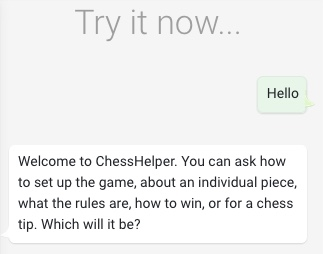
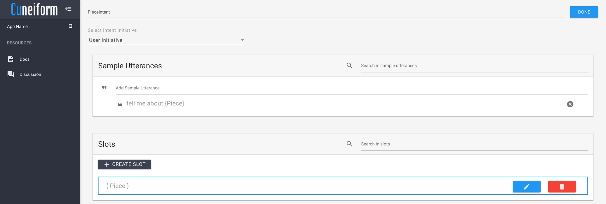

Shown above is an image of the Cuneiform development environment. The development environment consists of the following components.
The Try it Emulator provides the developer with a method to test the conversation flow of the developed application. Once saved, the developer can communicate with the emulator via text, and it would provide responses to the application in a similar way to how it would once deployed.
The intent properties component of the development environment can be accessed by clicking on in the operations menu.
This view provides the developer with the facilities to add and modify properties of an intent. An intent has the following three properties.
The next section explores the Cuneiform script.